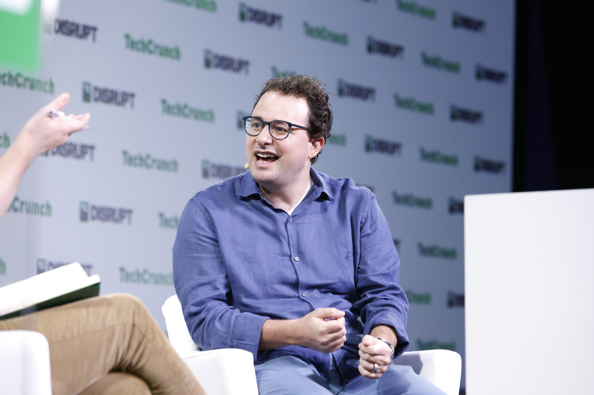

Executive Summary
On October 15 Anthropic brought six employees of METR, a nonprofit evaluation organization, inside the company. It hands them company hardware and office space, and opens internal tools and systems at roughly the level its own risk assessment teams reach. Anthropic stated plainly that it cannot veto the publication of METR's analysis of its risk levels, incidents, or practices. This article looks at the condition written alongside that declaration. What information may the company ask to have redacted?
Anthropic names three categories: data about customers, attorney-client privileged information, and information about model architectures. An e.g. sits in front of those three, though, and the clause on publication refers to them only as predefined categories like the ones above. Whether the three are the whole list or part of a longer one written into the agreement cannot be settled from the published text. METR may say publicly whether a redaction was justified, on the condition that it does not reveal the redacted information itself.
Sections 1 through 3 stay with the Anthropic announcement and the reporting around it. Section 4, which carries this structure over to every agreement that opens data to an outside party, is this article's own reading.
Key Figures
Source: Anthropic, An update on independent evaluators (2026-10-15), with cross-checking against TechCrunch.
Six
METR staff now working inside Anthropic
They receive company hardware and office space, and internal tool access roughly on par with Anthropic's own risk assessment teams
No veto
Anthropic's power over publication
It cannot block analysis of its risk levels, incidents, or practices. Instead it can require redaction within set categories
Three examples
Redaction categories the announcement names
Customer data, attorney-client privileged information, model architectures. An e.g. sits in front of them, so whether this is the full list is unconfirmed
Like tier two
Publication rights at METR's tier three
The tiers are separated by level of access. Publishing without approval was already open to tier two evaluators
Six Researchers Now Look Inside the Company Like Employees
METR is an American nonprofit that has spent years measuring how long and how complex a task a frontier model can carry out on its own. It holds to a principle of taking no money from the companies that build those models, while receiving from each of them the model access its evaluations require. This time METR received not access to a model but access to the company itself.
The two did not meet for the first time this week either. Anthropic wrote that over the past year it has worked with METR on several reviews of its Risk Reports. A relationship in which a finished report was read from outside has become one in which systems are watched from inside. The counterpart stayed the same, and the seat it occupies moved.
Anthropic wrote that it has brought six METR employees inside. They receive company hardware, office space, and access to internal tools and systems, at a level Anthropic described as roughly on par with what its own risk assessment teams can reach. Information sharing is not purely a matter of permissions, either. Anthropic encourages its own employees to share information with these researchers just as they would with a fellow employee working on alignment risk.
The publication side is what drew the most attention. METR publishes its own analysis of Anthropic's risk levels, incidents, or practices, and Anthropic cannot veto that publication. A structure in which the company under evaluation read the report first and decided whether it went out has clearly moved back a step.
The reason Anthropic gives is a gap. It aims to close the gap between what evaluators understand about a frontier AI company's systems and what the company itself understands. In September, naming Accenture its first embedded evaluator, Anthropic wrote that no standard yet existed for what an embedded evaluator should reach or for what and how it should report. This agreement is the first time concrete numbers and conditions have been written into that blank. The cost and independence arguments around the September announcement are set out in An AI Company Invites Its Inspectors Inside and Picks Up the Bill.

The Redaction Categories Are Listed Only as Examples
A condition sits directly beside the sentence about giving up the veto. Anthropic cannot block publication, but when information falls into a predefined category it can ask for that part to be removed. The announcement names three such categories: data about customers, attorney-client privileged information, and information about model architectures.
One word there is hard to walk past. Anthropic introduces those three with an e.g., and the publication clause calls them predefined categories like the ones above. Nowhere in the published text is there a sentence saying the three are all of them. Instead there is the phrase a small number of clearly defined categories, and the document holding that definition sits on the agreement side. A reader can check an example of the list today, and no more than that.
Of the three, the first two do not fight with evaluation. Customer data belongs to third parties, and attorney-client privileged material is redacted in any audit of any company. The third is the problem. Explaining why a model behaves the way it does often means pointing at how it is built. Risk assessment does not stop at what a model did; it moves on to where that behavior came from, so a conclusion can be published while part of the explanation holding it up is taken out. The narrower the redaction, the closer the report comes to a document somebody can check. The wider it goes, the closer the report comes to a document carrying only conclusions.
Another line in the same document makes this spot harder to miss. Anthropic sets out four conditions an evaluator needs, which are expertise, independence, access, and freedom to publish. The access condition reads that beyond access to the latest models, evaluators also need visibility into how those models were trained, into how the company's safeguards function. Training and safeguards are written down as what an evaluator needs. Architecture is written down on the side the company may ask to have removed. The two lines sit in the same document.
A check on redaction is written in as well. METR is free to characterize Anthropic's redactions publicly and to say whether it believes those redactions were justified. One condition attaches, which is that it must do so without revealing the redacted information. If the evaluator judges a redaction unjustified, that judgment reaches the outside, but what was taken out never does. A reader ends up holding an evaluator's objection in place of a verified conclusion, with no way to establish whether that objection is sound.
Operating conditions come with it. Anthropic explained that because these evaluators, like bank examiners, may also work with other companies, it exercises caution around the possibility of inadvertent leaks. The embedded work is confined to a small team operating under enforceable agreements, and other METR employees are siloed from that team's work. A wall has been built so that information does not spread inside the evaluation organization either, and that same wall blocks cross-review within the organization.
What Separates the Tiers Is Not the Right to Publish
Anthropic describes evaluator access in three tiers. Laying that description out in a table makes clear what this agreement actually grants that is new.
| Tier | Access | Publication | Who sits there now |
|---|---|---|---|
| Tier 1 | Narrowly scoped investigation. Anthropic sets the range of access | Requires Anthropic's approval | SecureBio (review of the chemical and biological weapons chapter in the August Risk Report) |
| Tier 2 | More information than tier 1 | Publishes without approval. Removal of specific categories can still be required | Accenture and Faculty (evaluation and red-teaming) |
| Tier 3 | Employee-like access | Publication rights similar to those of the second tier | METR |
Source: the tier descriptions in the Anthropic announcement (2026-10-15), carried over. Hugging Face is described only as being in early discussions.
Tier three, as Anthropic describes it, combines employee-like access with publication rights similar to those of the second tier. Publishing without approval was already open at tier two, and the condition allowing a demand to remove specific categories sits at tier two as well. What widened this time is the range of sight. The phrase about giving up a veto does not account for the difference between last month and this one.
Anthropic likened the structure to bank supervision. Because a bank knows its own risk position better than anyone outside it, regulators assign resident examiners to work inside the largest banks, and the company adds its own caveat that the analogy isn't exact. The place that caveat points to is clear enough. A bank's resident examiner is sent by law, and a supervisor sets the powers. Here, choosing the evaluator, dividing access into tiers, and writing down the categories that may be redacted are all done on the side being evaluated. The case where a state body tests a model before release is set out separately in Who Gets to Test a New AI First?
Anthropic writes that it brought this system in voluntarily, and adds that it believes every frontier AI company should do the same. That is why this design moving toward an industry standard matters. OpenAI has made the same commitment to bring in outside evaluators, and Google, Meta, Nvidia and xAI signed the White House Accord on Super Intelligence in support of independent review. The background Anthropic cites for this announcement is its own commitment to stronger independent, third-party assessment and the fact that it signed that accord. The structural hole in the accord, which is that each company picks its own auditor, was covered in The White House Accord on Super Intelligence Lets Companies Pick Their Own Auditors. This agreement is one concrete attempt to fill that hole, and at the same time a case of the same hole moving one step further inside.
The same document also sets down what an evaluator ought to be. Of the four conditions seen in the previous section, independence holds that evaluators shouldn't hold equity in the company they're evaluating, or be financially or operationally dependent on it. The party writing the qualifications and the party to be evaluated by those qualifications being the same hangs over the whole structure.
Criticism aimed at METR's own independence surfaced right after the announcement. The argument is that even without direct corporate funding, the funders and personal networks behind nonprofit AI safety work overlap with Anthropic's, and METR answers that direct corporate funding and an overlap of philanthropic sources are different matters. That argument about where the money comes from runs on a different axis from this article. Bring in an evaluator whose funding is spotless, and if the redaction list stays as it is, the range a report can cover does not change.
Why Pebblous Is Watching This Agreement
Agreements that open data and systems to an outside party are not a document only AI companies use. A company taking an external audit, an agency publishing public data, a hospital handing over raw records for research all write the same document. And when people read it, they usually start by counting the range of access. How many people come in, how far into the systems they reach, how long they stay. In this agreement, those numbers do not decide the quality of the conclusion. Where verification stops is set by the boxes left out, not by the boxes opened.
Three questions are worth putting to the exclusion list when an agreement lands on your desk.
- • Is the list closed? A list written as examples and a list written as the whole set are different documents. Examples that grow later are not a breach
- • Does a box left out hold up the conclusion? Redacting to protect a third party's rights and redacting the explanation that carries a finding are not the same redaction. Model architecture sits closer to the second
- • Does the fact of redaction survive? Only when how many items were redacted on what grounds is recorded, and the evaluator can speak to it, can anyone outside notice redactions widening
The Anthropic and METR agreement has a partial answer to the third question already in place, in the clause letting the evaluator speak publicly about whether a redaction was justified. The first question is still open. As long as the published text gives the categories only as examples, the next clue sits in the document METR actually produces. Anthropic said only that METR publishes the results of its risk assessments; it said nothing about when or how often. Reading that first report, look past how strong its conclusions run to what it leaves on the record about redaction.
Editor's Note
Pebblous sees something similar often enough when a customer's data is opened to an outside evaluator or a research partner. How far access goes gets written at length, while what will be withheld ends in a single line about sensitive information and the like. How far that one line stretches afterward is rarely counted or recorded anywhere. This article does not go as far as proposing a method for keeping that record.
Thank you for reading this far. The original is Anthropic's An update on independent evaluators, and the quotations in this article were checked directly against that announcement and the TechCrunch report. If your team writes agreements that open data to outsiders, we would be glad to hear how you have closed your exclusion list.
Pebblous Data Communication Team
October 17, 2026
References
- 1.Anthropic. (2026). "An update on independent evaluators." Anthropic News, October 15, 2026.
- 2.TechCrunch. (2026). "Anthropic is letting METR researchers look under the hood with employee-level access." October 15, 2026.